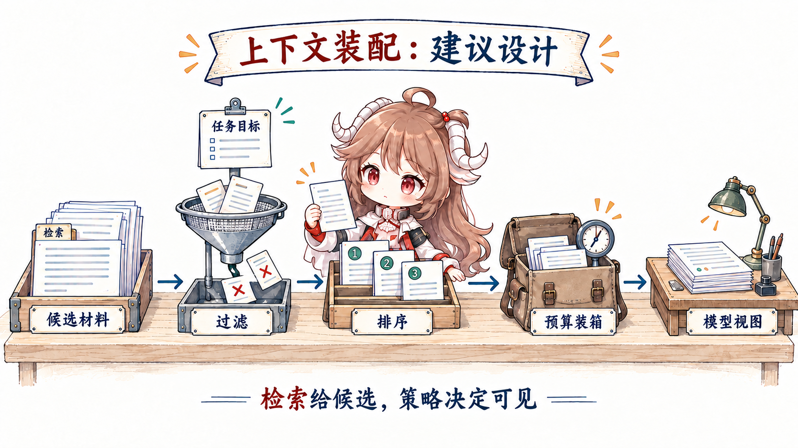
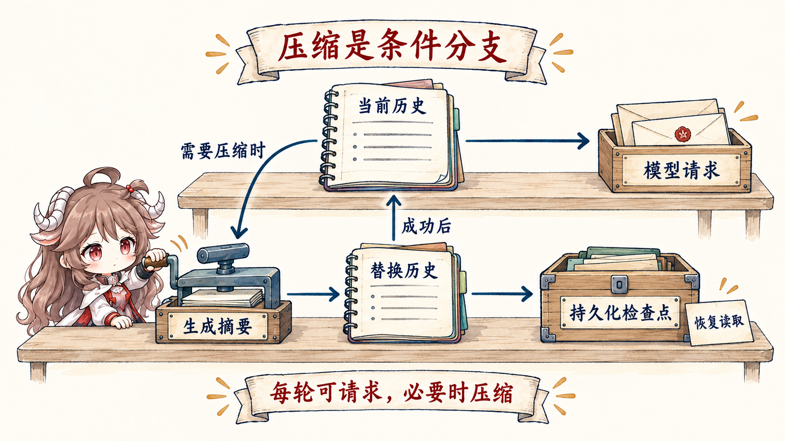

一次模型调用只能依据当前请求里真正提供的内容。项目里“有”最新日志、某轮对话里“提过”约束、数据库里“存着”用户偏好，都不代表模型这一次看到了它们。
读完这篇，你应该能回答：Context 最朴素的定义是什么？一条新测试结果怎样进入下一次模型调用？为什么保存、检索和最终可见是三件事？
资料说明：本文依据 Anthropic 的 context engineering 与 contextual retrieval 材料，以及 OpenAI 的 conversation state 和 prompt 指南。窗口、缓存和截断规则会变化，具体实现应回到目标模型当前文档；篇末教程只作延伸阅读。
一、先用“工作台”故事看懂 Context
1.1 资料都在，为什么模型还是用了旧日志
继续看支付测试任务。系统里同时存在昨天的失败日志、刚生成的新日志、当前代码改动、完整聊天历史和项目文档。如果把所有内容都塞给模型，旧日志可能与新日志冲突，大量历史也会淹没当前问题；如果只给一句“继续修”，模型又缺少判断依据。
更合适的材料包很小：任务目标、不能修改公开 API 的约束、当前 diff，以及刚运行的支付测试结果。它们足以回答眼前的问题——“这次修改是否有效，下一步该做什么？”
Context engineering，就是为模型的下一步挑选、整理并更新此刻该看到的材料。这里的 Context 不只指聊天记录，而是本次模型调用实际能看到的规则、任务和证据。
1.2 用“资料室、候选架、工作台”建立直觉
可以把整个系统想成一间资料室。长期存储像书库，负责把可能以后有用的内容保存下来；检索像图书管理员，根据当前问题找出一批候选；Context 则是最后摆上工作台、真正交给模型的那一小包材料。
因此，Memory 负责保存，retrieval 负责找候选，Context selection 负责最后选择。保存成功不等于被选中，检索命中也不等于值得送给模型。
一份常见材料包会逐项考虑：稳定规则、当前目标和完成条件、任务正处在哪个阶段、最近得到的工具结果、按需取回的文档或历史，以及为模型回答预留的空间。每一项都要回答两个问题：下一步真的需要吗？它还是最新、可信、允许使用的吗？
这里也能看清它与上一篇的关系：Prompt 是材料包里较稳定的行为说明，Context 是这次模型能看到的整包材料。两者会重叠，但解决的问题不同；一个负责把要求说清，一个负责让要求与当前证据在正确时刻一起可见。
二、让正确材料进入下一步判断
2.1 从保存到可见，要经过三层选择
先区分三个集合：durable store 保存可能以后有用的事实；candidate set 是检索、最近消息和运行时状态提供的候选；model view 才是本次请求真正序列化给模型的内容。保存成功只证明第一层存在，不能证明第三层可见。
| 材料 | 适合长期保存？ | 适合每轮携带？ | 主要风险 |
|---|---|---|---|
| 稳定系统规则 | 是 | 通常是 | 多份副本漂移 |
| 用户目标与 done 条件 | 是 | 通常是 | 压缩时丢失约束 |
| 完整工具日志 | 是，便于审计 | 否，只带相关片段 | 噪声挤占证据 |
| 当前文件内容 | 可由仓库保存 | 按任务选择 | 快照过期 |
| 阶段性计划 | 可 checkpoint | 当前阶段需要 | 旧计划阻碍新证据 |
| 秘密与敏感数据 | 按政策最小化 | 默认否 | 泄漏和权限扩大 |
2.2 一次 Context 是怎样装配出来的
Anthropic 把 context engineering 概括为在 agent 每一步维护最佳 token 集合。这里的“最佳”不是相似度最高，而是能支持当前决策：相关、足够新、来源可信、与目标一致，并且值得占用预算。

继续用支付测试任务。验证阶段的候选里同时有目标、旧错误日志、当前 diff、最新测试输出和完整聊天历史。装配器应先淘汰过期日志，再选择当前 diff 与最新测试输出；固定 instruction 和工具 schema 先计入输入成本，随后为输出预留空间，剩余预算才用于候选材料。
新结果进入下一轮也走同一条路：Harness 完成测试后产生一条最新 observation；运行时把完整日志保存起来，并把退出码、关键错误和日志引用加入候选；下一次装配时，它因“刚产生、直接影响当前判断”被选入 Context，旧错误日志则被淘汰。于是模型看到的不是原封不动的旧对话，而是已经被新证据更新过的工作台。
def assemble(candidates, phase, window, fixed_input, output_reserve):
usable = filter_by_scope_freshness_permission(candidates, phase)
ranked = rank_for_current_decision(usable)
budget = window - tokens(fixed_input) - output_reserve
return pack_without_splitting_evidence(ranked, budget)
verify_candidates = [
"goal", "old-error-log", "current-diff",
"latest-test-output", "full-chat-history"
]
# selected: goal + current-diff + latest-test-output2.2.1 先问“下一步要做什么”
同一个任务在调查、编辑、验证三个阶段需要不同工作集。调查时需要入口文件与错误日志；编辑时需要目标符号、调用方和约束；验证时需要 diff、测试命令和失败输出。用整个任务的宽泛 query 检索，往往会得到“总体相关、当前无用”的材料。
2.2.2 再按来源和新鲜度过滤
相似度不能判断权威。正式 schema 比旧讨论更可靠，刚执行的测试比三轮前的猜测更新，工作区文件比模型记忆更接近当前事实。每个 context item 最好携带来源、时间/版本、作用域和敏感级别，装配器才能做确定性过滤。
- 产生事实：Harness 读取当前
payment.go，得到函数签名和工作区版本。 - 登记候选：Runtime 把正文或引用与来源、版本、作用域放入 candidate set。
- 通过关口：装配器检查它是否属于当前任务、是否仍新鲜、当前模型是否有权看到。
- 形成视图：只有通过选择并装入预算的 item 才进入本次 model view；文件变化后，旧版本必须失效并重新读取。
{
"item": "payment.go: validateRefund(...) signature",
"source": "workspace_file",
"version": "git:7ad12f + dirty",
"observed_at": "turn:18",
"scope": ["refund-fix"],
"trust": "local-authoritative",
"ttl": "until-file-change"
}until-file-change 不是文本自带的保证。Runtime 必须监听或比较工作区版本，在文件变化后使旧 item 失效；否则 TTL 只是一句无人执行的愿望。
2.3 材料放不下时，先保护关键内容
简单地“超过 N tokens 就砍前面”会随机伤害关键约束。更稳的策略是先扣除 instructions、工具 schema 等固定输入成本，再为输出预留空间，余下预算按分区分配给稳定契约、当前目标、近期 observation、检索证据和历史摘要。预算可以动态变化，但优先级必须显式。
| 分区 | 预算原则 | 压力下的处理 |
|---|---|---|
| 行为契约 | 小而稳定，优先保留 | 去重，不随意总结 |
| 目标与完成标准 | 每轮可见 | 结构化压缩并校验字段 |
| 当前 observation | 离决策越近越优先 | 保留错误码、关键行和来源 |
| 历史过程 | 只保留仍影响决策的状态 | 总结、写入失效标记（tombstone）或移出 model view |
| 候选文档 | 按任务阶段打包 | 降级、分批读取或再检索 |
| 输出空间 | 调用前预留 | 不能等输入塞满后再希望模型完成 |
三、进阶：让长任务可以压缩、恢复和追查
3.1 长任务需要压缩，但不能压掉任务状态
长任务早晚需要压缩（compaction）。高质量压缩应保留目标、约束、已确认事实、已做变更、未解决问题、下一步和证据指针；可丢弃重复解释、完整低价值日志和已经被新事实推翻的猜测。摘要本身是有损变换，所以必须可追溯到原始记录。

3.1.1 用 checkpoint schema 保护关键状态
下面是一种形状级 schema，不是某个产品的固定字段：
- Goal：当前任务与完成条件。
- Constraints：不能丢的产品、安全和用户边界。
- Confirmed：带来源的已验证事实。
- Changed：文件、外部对象和副作用记录。
- Open：未解决问题、失败尝试及原因。
- Next：下一动作以及为什么。
自由文本摘要适合人读，结构化 checkpoint 适合恢复与校验。二者可以同时存在：结构保证不变量，叙述解释因果。
{
"goal": "Fix refund_should_reject_expired_order",
"constraints": ["Keep public APIs stable", "Run payment tests"],
"confirmed": [{"fact": "expired-order guard is missing", "ref": "workspace:payment.go"}],
"changed": ["payment.go"],
"open": ["payment tests have not run"],
"next": "run payment tests",
"evidence_refs": ["trace:test-run-4", "workspace:payment.go"]
}next。删除 constraints、open 或 evidence_refs，分别会造成边界丢失、虚假完成或无法追溯。3.2 检索命中为什么仍可能是坏 Context
Memory 是持久化机制，retrieval 是找候选的机制，context 是本次调用的可见集合。一个事实写进 memory 后，仍需要检索、过滤和预算才能进入 context；一个工具结果即使不写 memory，也可能在当前回合直接进入 context。
Anthropic 的 contextual retrieval 展示了一个关键点：孤立的检索切片（chunk）可能丢失文档语境，为 chunk 补充来源上下文能改善检索。工程上还要继续往后走：检索命中只是候选，运行时仍需检查版本、权限、重复和与当前阶段的关系。
3.3 模型用错事实时，沿选择过程向前查
当 agent 用错事实，必须能回答：候选里有没有正确事实？它在哪一步被过滤？错误事实为什么排得更高？最终请求带了哪一版？压缩是否改写了含义？因此每次调用最好记录一份不含敏感正文的 context manifest。
- item id、来源、版本与选择原因；
- 确定性过滤原因、进入/淘汰阶段与排序分数，不只保留最终列表；
- 每个分区的 token 用量和截断事件；
- 摘要或压缩产物指向的原始证据；
- 敏感材料的脱敏、授权与保留策略。
四、复盘：装配下一次 Context 的五个问题
| 评审问题 | 要防的失败 | 首选机制 |
|---|---|---|
| 模型此刻必须知道什么？ | 缺关键证据 | 按当前决策定义 working set |
| 每条事实从哪里来、还新鲜吗？ | 过期与错误权威 | provenance、版本、TTL |
| 为什么它值得占窗口？ | 噪声和 lost-in-the-middle | 分区预算、排序、去重 |
| 压力下哪些不变量不能丢？ | compact 后目标漂移 | 结构化 checkpoint |
| 下一次运行怎样重新取得它？ | 把 session 当 memory | durable store + 可重放选择策略 |
Context engineering 的结果不是“塞得更多”，而是模型在每个决策点拿到正确的工作集。下一篇转向模型看不见却决定动作能否发生的部分：runtime harness。
官方资料
- Anthropic：Effective context engineering for AI agents
- Anthropic：Introducing Contextual Retrieval
- OpenAI：Conversation state
- OpenAI：Prompt engineering
- OpenAI：Harness engineering